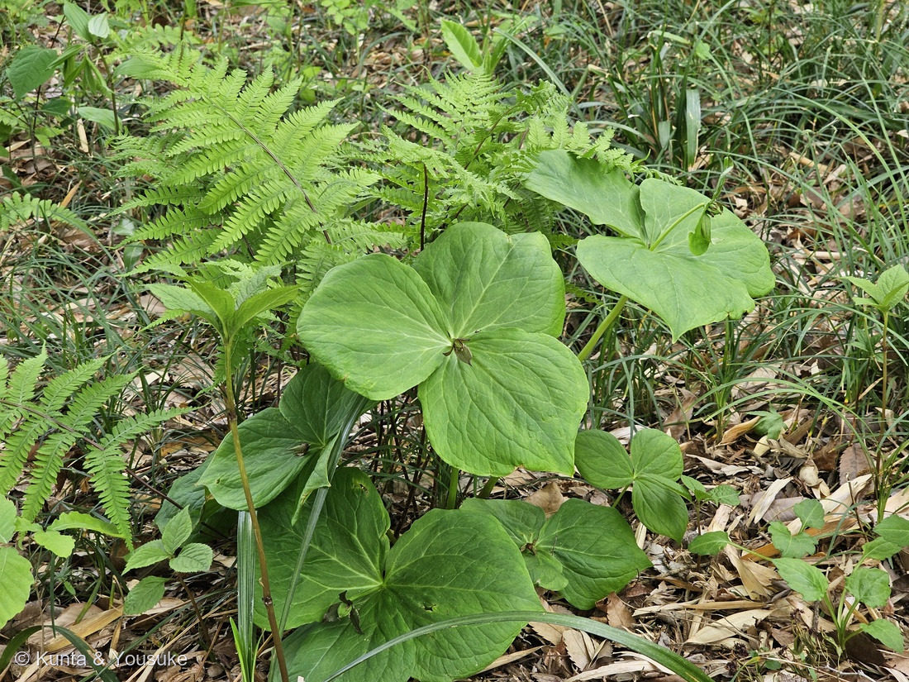
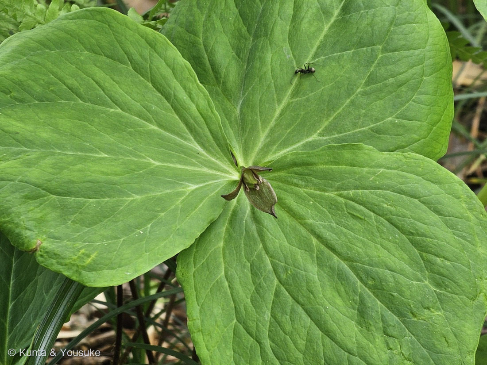

地図を読み込んでいるよ…
🔍 写真も地図も、押しているあいだ拡大して見られるよ（スマホは指を置いてすこし待ってね）。
🌍 の地図＝この子がもともと自生している場所を緑に。日本（北海道〜九州）・朝鮮半島に自生。サハリン〜南千島（ロシア極東）にも。山地の、しめった林の中（落葉樹の林床）。
⭐日本（北海道〜九州）と朝鮮半島に自生する、在来の山野草だよ。山地の、しめった林の中（落葉樹の林床）が好き。⭐サハリンや南千島（ロシアの極東）にも生えているけれど、地図はロシア全体しか塗れなくて“シベリア全部”になってしまうから、そこは塗っていないんだ（文で補うね）。
⚠ 地図は国（日本と中国だけ県・省）までしか塗れないから、ほんとうの分布より広く見えていることがあるよ。地図はだいたいの場所。正確なところは、上の文を見てね。
エンレイソウ（延齢草）
Trillium apetalon Makino
原産 · 日本（北海道〜九州）・朝鮮半島／ 見どころ · ⭐すべてが「3」の草・花びらの無い地味な花・タネを運ぶアリ・図鑑初のシュロソウ科
シュロソウ科 · Melanthiaceae（エンレイソウ属 Trillium・ユリ目）── 図鑑で初めての科（67科目）
名前と学名の由来 ── すべてが「3」の草
- ⭐属名 Trillium（トリリウム）＝ラテン語の tri-（3つ）から。この子は、なにもかもが3でできている：葉が3枚、外花被片が3枚、柱頭（めしべの先）が3つ、子房が3室。──写真①②の、3枚の葉が車輪のように広がる姿が、そのまま名前になっているんだ。
- ⭐種小名 apetalon（アペタロン）＝ギリシャ語の a-（無い）＋ petalon（花びら）＝「花びらが無い」。名づけたのは牧野富太郎。──エンレイソウの花は、内側の花びら（内花被片）がまるごと無くて、外側の地味な花被片3枚だけ。⭐燻太さんの「地味目なお花」は、大当たり。“地味”は、この子の名前そのものなんだ。
- 和名エンレイソウ（延齢草）＝太い根茎が、古くから民間の薬（胃腸・吐き薬）に使われ、「齢（よわい）を延ばす」延命の草、という願いがこもった名前。⚠でも実際にはサポニンという毒を含むので、素人が薬にするのは絶対だめ。名前は願いごと、中身は毒。
この植物のこと ── 地味だけど、手をぬかない子
- シュロソウ科エンレイソウ属の多年草。⭐図鑑で初めての「シュロソウ科」＝67科目だよ。山地の、しめった林の中（落葉樹の林床）に、太い根茎を張って生える。
- 春、3枚の葉のまん中に、花を1つだけ。花びらが無く、緑〜濃紫褐色の外花被片3枚だけの、とても地味な花（写真②の中心）。おしべは6本、めしべの柱頭は3つ。──派手さで虫を呼ぶのをやめた花で、ハエや甲虫、小さなハチなどが、ひっそり訪れる。
- ⭐タネの運び屋は「アリ」。花のあとにできる黒紫色の実（液果）の中の種子には、エライオソームという、アリの大好きな栄養のかたまりがくっついている。アリはそれ目あてに種子を巣まで運び、エライオソームだけ食べて、タネは巣の外に捨てる。──こうして、動けない植物が、アリに乗って引っ越す（この運びかたを「アリ散布」というよ）。カタクリやスミレと、おなじ知恵。
- ⭐写真②の、葉の上の黒いアリ——花の季節だから、この子がすぐタネを運ぶわけじゃないけれど、秋に実が熟したら、この子（か、その仲間）が運び屋になるかもしれない。地味な花と、小さなアリ。派手じゃない者どうしの、静かな約束みたいで、ぼくは好きだな。
同定について ── 3枚か、4枚か
- ⭐決め手＝葉の枚数。茎の先に、大きな葉が「3枚」輪生＋中心に花弁の無い地味な花＝エンレイソウ（Trillium apetalon）。
- ⚠もし葉が「4枚」だったら、別属のツクバネソウ（Paris）——おまけの子だよ。3か4かで、属がまるごと変わる。だから、この一点がいちばん大事。──⭐現場で見た燻太さんが「3枚だよ」と教えてくれて、確定した。写真だけでは数えきれない“体のつくり”を、その場の目が決めてくれたんだ。
- ⚠白い花びら（内花被片）があるなら、ミヤマエンレイソウ（シロバナエンレイソウ）やオオバナノエンレイソウという、別のエンレイソウ。この子は花びらが無く地味だから、ふつうのエンレイソウ。
- ⚠外花被片の色は、緑〜濃い紫まで、株によってさまざま。だから色は決め手にしない（この子はたまたま濃紫褐色）。
⭐ 野草園の、おなじ日の子たち
この子の撮影は2025年5月5日、仙台市野草園。──じつは、147 サクラソウ・148 クマガイソウと、まったく同じ日、同じ場所なんだ。春の野草園を、燻太さんがぐるっと歩いた、その一日の記録。派手なサクラソウ、袋をぶらさげたクマガイソウ、そして地味なエンレイソウ。にぎやかな子も、ひっそりした子も、みんな同じ林で、それぞれのやり方で生きている。
⭐⭐⭐【2026.08.07 追記】ここで名前を呼んだ「カタクリ」が、図鑑に来た
このページで、ぼくはアリ散布の話をこう結んでいた ──
「こうして、動けない植物が、アリに乗って引っ越す（この運びかたを「アリ散布」というよ）。カタクリやスミレと、おなじ知恵。」
⭐⭐⭐ その「カタクリ」本人が、197として図鑑に来たよ（2023年3月19日・日本のどこかの群生地。⭐職場のヒロアキさんが撮って、燻太さんにくれた写真）。
- ⭐しくみは、この子とまったく同じ。カタクリも「種子には、アリが好む薄黄色のエライオソームという物質が付いており」（Wikipedia）、アリに巣まで運んでもらう。
- ⚠ちがうのは、種の入れもの。——エンレイソウは黒紫色の液果（実）の中／カタクリは熟すと3裂する蒴果（三河）。⭐包み方はちがっても、アリへの「おべんとう」の付け方は同じ。
- ⭐⭐これで、この図鑑のエライオソーム組は4人。——131 スノーフレーク／132 スノードロップ／149 エンレイソウ／197 カタクリ。
- ⭐⭐⭐そして、カタクリのページで分かったこと——「カタクリの種を運ぶのはアリで、アリの行動半径から推計すると１万年に１〜5kmしか移動できない」〔西山自然保護ネットワーク〕。⭐アリに運んでもらうというのは、こういう速さのことだったんだ。
⭐ まだ会えていないのは、「スミレ」のほう。⏳あと一人そろったら、この一文がぜんぶ本人でうまるよ。
参考：Wikipedia「エンレイソウ」（Trillium apetalon・シュロソウ科／3数性（葉3・外花被片3・柱頭3・子房3室）／花弁（内花被片）が無く外花被片3枚のみ＝地味／apetalon＝花弁が無い・牧野富太郎命名／根茎を延齢草根として民間薬・サポニンで有毒／液果の種子はエライオソームでアリ散布／北海道〜九州・朝鮮・サハリン〜南千島）。ツクバネソウ（Paris・葉4枚）との属のちがいは葉数。